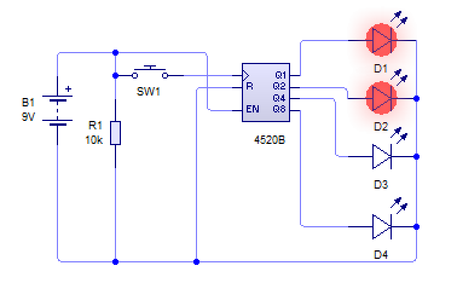
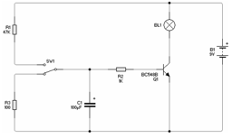

Advanced Electronics
Table of Contents
1 Introduction
- As you will come to realize as you work through this section, PIC chips are one answer to most (but not all) of the different concepts you need to be able to provide different solutions to for the exam.
- The main categories you will need to be able to have an awareness of are:
- Timers
- Counters
- Decoders
- Latches
- Amplifiers
- Comparators
- Output Transducers
Timers
- Many different problems require a circuit to have the ability to use time in order to achieve an outcome. A door lock might need to be held open for several seconds before re-locking, or a tone may need to be produced at a certain pitch by outputting a frequency through a speaker. You need to know two different ways of achieving each of the following.
- A single (monostable) output pulse of a set duration.
- This can be achieved either by using a PIC chip, and writing code to turn the output in question on, pause for the desired time and then turn off again. This is a really simple solution to implement using a single PIC, but it’s worth remembering that a “basic” model of PIC can cost about 75p.
- A 555 timer set up as a monostable will allow a precise timed pulse of up days in length if desired. They’re also very cheap (≅15p each), although require the resistor and capacitor values to be calculated, and will then need tuning (as capacitors can be ±20% accurate).
- A string of output pulses (astable) with a set mark/space ratio. The “mark time” is the length of time the output is high, and the “space time” is the amount of time that the output is low. One can calculate the mark/space ratio with: Mark/space ratio = time high / time low
- A PIC chip could be used to produce this effect.
- Alternatively, a 555 timer circuit (set up as an astable) will allow you to clock speeds of up to 300kHz, and are very cost effective.
- There are examples of both types of 555 circuit, along with the calculations to set them up as desired in the \resources\Circuit Ideas\ section of the Systems & Control folder in the open drive.
Counters
- It is often desirable in a circuit to be able to count. This could be so that a series of different LEDs can flash in a pattern to make an attractive visual output, or to trigger an output after a particular input has been triggered a set number of times.
- Methods of counting input pulses to produce a decade output.
- A PIC chip has several variables which can store values well over ten, so could count up, and produce outputs as desired at each value. The advantage of using a PIC here is the added flexibility to perform different tasks at each counted value.
- A 4017b decade counter (also known as a divide-by-10 counter) is an IC which has 10 outputs, and a trigger pin. Each time a pulse is sent to the trigger, the next output in the series is turned on. When combined with a 555 timer and a number of LEDs, this can be used to provide an automated light-show.
- A 4026b is a decade counter that is designed to be connected straight to a 7-segment display. These can be strung together to produce multi-digit numbers.
- Methods of counting input pulses to produce a binary output. If you've never encountered binary before, read our guide to binary here.
- A PIC chip can detect input pulses, and are represented as a binary output within the chip itself. Through writing code, the value can be expressed in any way desired… LEDs showing binary, a 7-segment output, a series of beeps through a speaker, etc.
- A 4520 binary decade counter enables binary counting. The picture below shows a simple setup, where the number 3 is being shown (1 + 2)

- Methods of counting input pulses to produce the correct coding to operate a 7-segment display.
- A PIC with at least 7 outputs can be programmed to display any choice of value (look up the pin-out on the web to see which pin maps to segments a-g).
- A 4511 IC will take a 4-bit binary input, and convert it to the equivalent output for a 7-segment display.
- A 4026 counter and 7-seg decoder IC will take pulses, and count up each time, showing the result on a 7-segment display. This saves you having to waste outputs on a costly PIC, as well as simplifying your PCB design.
Decoders
- You need to know a method of decoding a 4 bit binary input to:
- Drive a 7 segment display. A PIC chip with 4 inputs could be used to pick up the inputs, then encode them through either single output connected to a 4511 (discussed above), or through 7 PIC outputs, straight into a 7-segment display.
- Produce a decade output. A PIC chip with 10 outputs (e.g. E28) would be a simple (but very costly) solution. Alternatively, a smaller PIC with 4 inputs and a single output could be combined with a decade counter, and then code be used to create the output, based on the binary value going in.
Latches
- Two alternative methods of setting and latching the state of an output for a specific input.
- A thyristor is a component which “latches” fully open (i.e. allows current to flow from the anode to the cathode) when it receives at least 2v through its gate pin, and stays open even when power is removed from the gate. This is especially handy for alarm circuits, where it is desirable to have an alarm sound continuously when an input is triggered. By using a potential divider, one can adjust the sensitivity of the latch.
- A PIC chip can be programmed to turn on a specific output when an input signal is received, and to stay on indefinitely.
- A 555 timer can be set up in “bistable” mode, which will also act as a latching switch. This isn't part of the A level curriculum, but it's a nice little factoid to know about!
Amplifiers
- Amplifying Current…
- An NPN transistor, when the load is connected to the emitter pin will act as a current amplifier, multiplying the output current by the hFE of the transistor (this varies from model to model).
- An operational amplifier can act as a current amplifier, producing thousands of times more than the incoming current.
- Amplifying Voltage…
- An NPN transistor, when the load is connected through the desired voltage rail and the collector will act as a voltage amplifier.
- Op-Amps can also be used to boost small input signals. Examples can be seen here.
Comparators
- Comparing different input voltages: PIC chips normally have both digital and analogue inputs, which will allow different input voltages to be read, and converted into a integer (0-255 on an 8-bit Genie PIC), and then processed as desired in code.
- Digital inputs. PIC chips have multiple digital inputs that can be used to detect input signals from PTM switches, big changes in LDRs, etc.
- Output Transducers. Ensure that you can identify at least one electronic output transducer for each of the following:
- Linear motion. Solenoid.
- Rotary motion. DC motor or stepper motor.
- Precise angular movement. Servo motor.
- Heat. Heating element.
- Light. LED or bulb.
- Sound. Piezo transducer or speaker.
- Amplification. NPN transistor or Operational Amplifier.
- Magnetism. Electromagnet (copper wire wound around an iron core), or a relay (which contains a small electromagnet).
2 Recap
Past Paper Questions
- Specimen Paper, Q2. An electronic method of producing a time delay is shown here.

- (a) Explain in detail at least four stages the operation of the circuit as the switch SW1 is connected to R1. (4× 1 mark)
- (b) Give two methods of increasing the time delay of the circuit. (2 marks)
- June 2009, Q7. (a) Describe in detail one method of producing a Printed Circuit Board (PCB). (8 marks)
- (b) Identify two health and safety risks when producing and soldering components onto printed circuit boards and state how these risks may be reduced. (4 marks)
- (c) Electronic circuits can be prototyped using breadboard or by modelling on a computer simulation package. Compare these two methods of prototyping electronic circuits. (8 marks)
- June 2011, Q5. (a) Using a diagram, describe two different systems for producing a time delay suitable for switching on a 240 volt ac lamp for 10 minutes when a switch is momentarily pushed. (16 marks)
- (b) Choose one of your systems given in part (a). Explain how it would be possible to make the system adjustable so the time period could be any value between 2 and 30 minutes. (4 marks)
- June 2012, Q5 (a) 5 (a) (i) With the aid of diagrams, describe two different systems for continuously flashing a normal LED. The LED should switch on for approximately 2 seconds then off for approximately 3 seconds. Your solutions should include any relevant calculations. (16 marks)
- (b) Choose one of your solutions from part 5(a). Explain how it would be possible to modify the system for switching on a 240volt ac lamp. (4 marks)
- June 2012, Q7. (a) A system is required to automatically monitor and control the temperature in a room. With the aid of diagrams, show two systems that would produce an electrical output of at least 2 volts at 10mA when the temperature exceeds 25°C. (8 Marks)